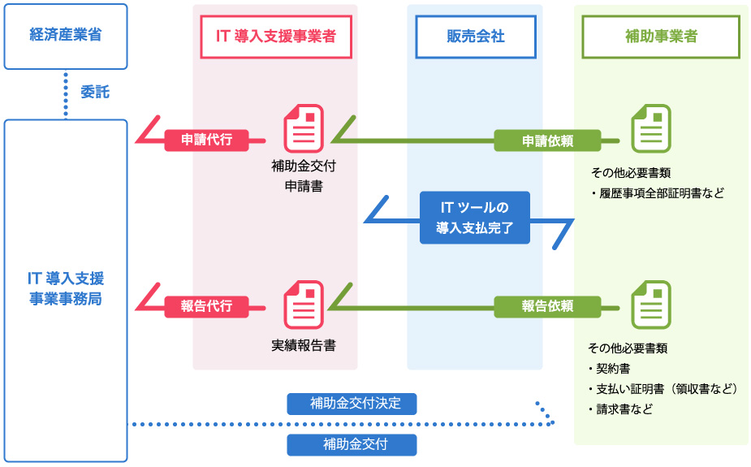

IT導入補助金とは？
IT導入補助金は、中小企業・小規模事業者等の生産性向上を支援する目的で、ITツール（ソフトウエア、サービス等）の導入にかかる経費が
一部補助される大変お得な制度です。
IT補助金の概要
| 補助金交付申請の受付期間 | 一次公募：2017年1月27日（金）～2月28日（火）＜受付終了＞ 二次公募：2017年3月31日（金）～6月30日（金）＜受付終了＞ |
|---|---|
| 対象となるITツール | 事前に登録されたITツール（ソフトウェア、サービス等）が対象 |
| 補助額 | 購入金額の3分の2（下限20万円～上限100万円） |
| 補助申請回数 | 事業者ごとに1回 |
| 申請方法 | IT導入支援事業者による代理申請 |
補助対象事業者
| 資本金の額又は出資の総額 | 常時使用する従業員の数 | |
|---|---|---|
| 製造業、建設業、運輸業 | 3億円以下 | 300人以下 |
| 卸売業 | 1億円以下 | 100人以下 |
| サービス業 | 5,000万円以下 | 100人以下 |
| 小売業 | 5,000万円以下 | 50人以下 |
| ゴム製品製造業 | 3億円以下 | 900人以下 |
| ソフトウェア業、情報処理サービス業 | 3億円以下 | 300人以下 |
| 旅館業 | 5,000万円以下 | 200人以下 |
| 関連組合 | - | |
| 医療法人・社会福祉法人 | 資本金・従業員の一方が「サービス業」の値以下となる事 | |
| 特定非営利活動法人 | 資本金・従業員の一方が法人の主たる業種の値以下となる事 | |
IT導入補助金の申請 ～ 交付の流れ
ITツールの購入・導入は補助金交付の決定後となります。
